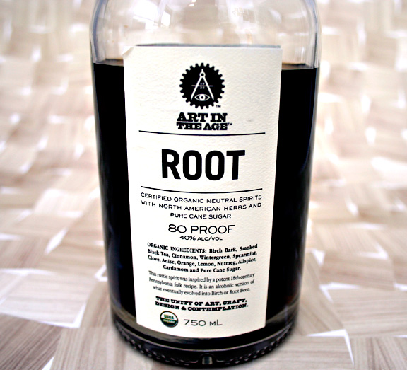

Root by Art in the Age
In the 1700’s ‘Root Tea’ was a popular Native American-created spirited beverage and herbal remedy made of sassafras, sarsaparilla, birch, bark, and other roots and herbs. When prohibition hit America in 1920 a pharmacist created a non-alchohoic version of the drink, ‘Root Beer’, to meet the demands for a similar flavor to ‘Root Tea’.
Philadelphia distiller Art in the Age recreated the popular ‘Root Tea’ and assures that it’s not just a root beer flavored spirit. Aside from an interesting recipe, history and drink they have fantastic packaging with great typography using Hoefler & Frere-Jones’s Ziggurat and Font Shop’s DIN. More information about Root.
I would love to try this interesting drink, but for the time being it seems that it’s unavailable in California.